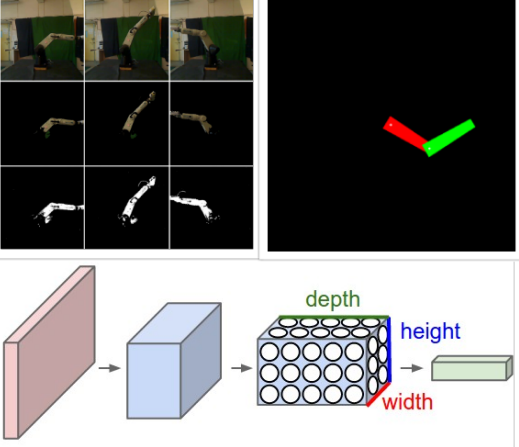
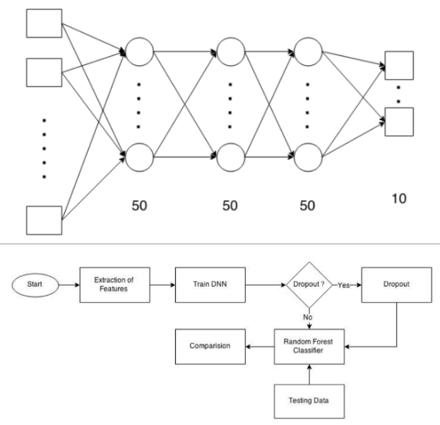
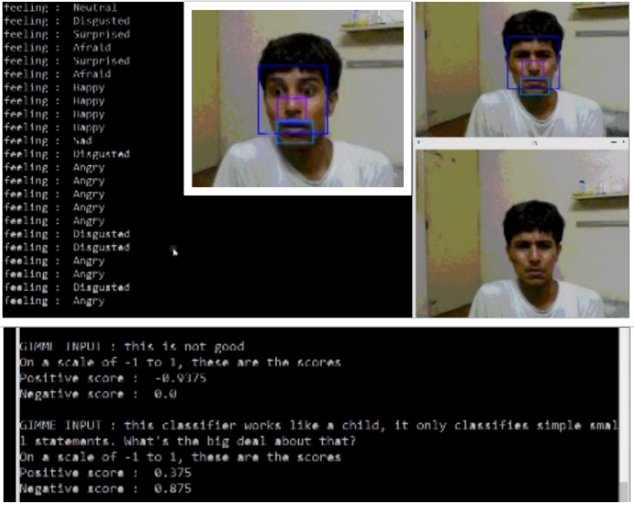

About Me
I am a Dual Deagree student in the Electrical Engineering department at Indian Institute of Technology, Bombay. I'm broadly interested in the fields of Machine Learning, Image processing, Computer Vision, Multimodal models. Apart from my academic pursuits, I like to spend my time looking at the world through a camera, playing the guitar or developing any application that could help the community or just automate my work!
You can find my resume here.
Projects
Reconstructing unique inversions using a deep model of motion
Mentored by: Prof. Amitabha Mukerjee
Extended the Convolutional Chair Generation model by Dosovitskiy et al. for a 3-DOF CRS Robot. Reconstruction of robot
poses using joint angles and viewpoint enables us to perform local planning by checking obstacle intersection
in the image space by key-point mapping. This in turn helps build the final PRM for robot path planning. Currently working
on creating an example dataset of the CRS-Robot for the model.

We attempted classification of music into genre and artists using a Deep Neural Net architecture and inspected other methods used in tandem with the
Neural Net or independently, comparing their robustness and accuracies. Our final framework (Neural Network + RF classifier) worked very well
for the artist classification problem. It was seen that the network learnt real musical features when it confused Eric Clapton and the band
Cream, which Eric Clapton headed as the lead guitarist.
|
Proposal
|
Slides
|
Report
|
Poster
|
Code |

In this project, we attempted the task of emotion recognition using three modalities (viz. frontal facial image, speech and text input).
Each of the modes was trained independently and then an ensemble classifier was built to take these classifiers and give a final emotion.
Seven emotions were classified with reasonable accuracies.
|
Wiki
|
Report
|
Code |
